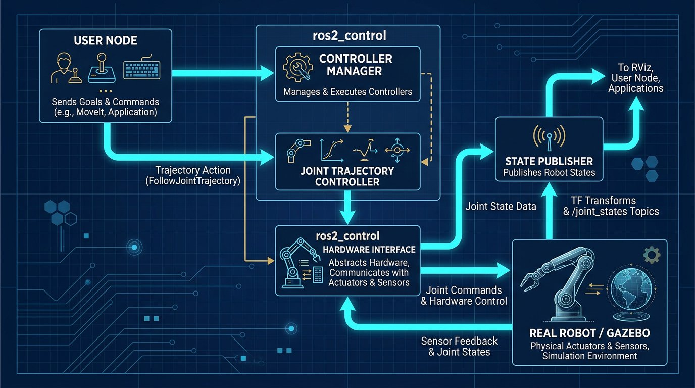

What the Controller Actually Has to Do
"Which board should I use?" is really three separate questions wearing one trench coat: can it generate clean, consistent timing signals for six or more servos at once, does it have enough compute for anything beyond fixed motion sequences (vision, path planning, a ROS 2 node), and does its power and logic-voltage profile fit the rest of your build. Get the first one wrong and joints twitch or drift. Get the second one wrong and you've bought more board than your project needs, or far less.

Three Boards at a Glance
| Board | What it is | Native servo timing | Logic voltage | Best fit |
|---|---|---|---|---|
| Arduino Mega 2560 | Bare microcontroller, no OS | Excellent — dedicated hardware timers, 54 digital pins | 5V | Pure real-time servo control, point-to-point wiring |
| ESP32 | Dual-core microcontroller with WiFi/Bluetooth | Good — 16-channel LEDC PWM peripheral | 3.3V | Wireless-connected control, compact builds |
| Raspberry Pi (4/5) | Linux single-board computer | Limited — a handful of true hardware PWM lines | 3.3V | Vision, planning, ROS 2, network interfaces |
Real-Time PWM Handling: The Deciding Factor
This is where the three boards diverge the most, and it's the single biggest reason project boards get swapped mid-build. Arduino's microcontroller has no operating system between your code and the hardware timers, so a PWM pulse goes out exactly when your code says it should, every time. ESP32 is similar in practice — its LEDC peripheral gives you up to 16 independently configurable PWM channels in hardware, which comfortably covers a 6-axis arm plus a gripper channel.
A Raspberry Pi is a different situation. It runs full Linux, and while recent Pi boards do expose true hardware PWM through the onboard I/O controller, only a small number of GPIO lines actually carry it — commonly just two independent channels in practice, since several of the PWM-capable pins share the same underlying channel in pairs. Software PWM works on any GPIO pin, but it's generated by the OS scheduler rather than dedicated silicon, so it can jitter under system load in a way that shows up as a servo that twitches slightly even when it should be holding still.
The practical fix, and the one used on essentially every serious Pi-based servo project, is to hand PWM generation off to a dedicated I2C driver board like the PCA9685 — the same 16-channel chip covered in our Arduino 6-DOF tutorial. The Pi tells the PCA9685 what angle each channel should hold over I2C, and the driver chip generates the actual PWM waveform in dedicated hardware, completely independent of what Linux is doing at that instant.
I tried driving all six joints directly from Raspberry Pi GPIO on an early prototype, splitting channels between true hardware PWM and software PWM to make up the difference. The two hardware-PWM joints held rock steady. The four software-PWM joints had a barely visible tremor whenever I ran anything else on the Pi — a video stream, a background script, even a slow-scrolling terminal. Moving all six channels to a PCA9685 over I2C, with the Pi purely issuing angle commands, eliminated the tremor entirely and freed the Pi up to actually do the compute work I bought it for.
Power Draw Comparison
Power draw scales with what's on the board, and it matters directly if you're building the battery-powered arm covered in our battery and power system guide — a controller with a heavier power budget eats directly into your runtime.
| Board | Typical Idle Draw | Typical Active Draw | Recommended Supply |
|---|---|---|---|
| Arduino Mega 2560 | ~50-80mA | ~100-150mA | 5V USB or 7-12V barrel jack |
| ESP32 | ~80-120mA | Up to ~500mA with WiFi transmitting | 5V USB or regulated 3.3V |
| Raspberry Pi 5 | ~600-800mA | Up to ~3-5A under full CPU/GPU load | 5V, 5A official supply |
None of these figures include the servo bus itself, which is sized separately using the current-budget method in our wiring guide. The controller's own draw is a separate, additive line item on top of that.
Which One Should You Pick?
- Choose Arduino Mega if the arm runs fixed or lightly-parameterized motion sequences, doesn't need vision or network connectivity, and you want the simplest possible real-time behavior with the most digital I/O for a point-to-point build.
- Choose ESP32 if you want the same real-time reliability as Arduino but need built-in WiFi or Bluetooth — for example, a phone-app-controlled arm or a wireless telemetry link — in a smaller, cheaper package.
- Choose Raspberry Pi alone only if your project is genuinely compute-bound (computer vision, a full ROS 2 stack, a web dashboard) and you're prepared to add a PCA9685 or similar driver for clean multi-servo timing rather than relying on GPIO directly.
- Choose a hybrid setup if you want both — see below.
Hybrid Architecture: Using Two Boards Together
The most common architecture in serious builds isn't "pick one," it's "split the job." A Raspberry Pi handles the parts that need real compute — camera input, path planning, a ROS 2 node, a web interface — and hands off a target joint pose to a microcontroller (Arduino or ESP32) over serial or USB. The microcontroller's only job is converting that pose into precise, jitter-free PWM output, which is exactly what it's built to do without an operating system getting in the way.
This division of labor means neither board is doing a job it's poorly suited for: the Pi never has to fight Linux scheduling for real-time timing, and the microcontroller never has to run a vision pipeline it doesn't have the RAM for.
"The question isn't which board wins — it's which half of the job each one is actually good at, and whether your project needs both halves."— Marcus Chen, Robotics Engineer
Cost Comparison
| Setup | Approximate Cost (USD) | Notes |
|---|---|---|
| Arduino Mega 2560 alone | $15 - $40 | No driver board needed for a 6-servo PWM build |
| ESP32 dev board alone | $8 - $18 | Add a level shifter if pairing with 5V TTL smart servos |
| Raspberry Pi 5 alone + PCA9685 | $75 - $110 | Needs its own 5V/5A supply and a microSD or NVMe boot drive |
| Hybrid: Pi 5 + Arduino Mega + PCA9685 | $95 - $150 | Most capable option; also the most wiring and firmware complexity |
Prices vary by supplier and region — confirm current pricing directly before treating these as fixed quotes.
Related Resources
- Arduino Mega Wiring Guide for 6-DOF Robot Arms with Smart Servos
- ESP32 as a Robot Arm Controller
- ROS 2 Control Architecture for 6-DOF Robot Arms
- Battery and Power System Selection for Portable 6-DOF Robot Arms
- The Complete 6-DOF Robot Arm Guide (2026)
Sources and References
- Raspberry Pi Documentation — official GPIO and PWM peripheral documentation for current Raspberry Pi boards.
- Espressif — ESP32 datasheet and LEDC (PWM) peripheral technical reference.
- Arduino — Arduino Mega 2560 technical specifications and timer documentation.
- NXP PCA9685 datasheet — 16-channel I2C PWM driver specifications referenced for hybrid architecture.
This article reflects my own build experience and publicly available manufacturer documentation. It does not contain sponsored placements or paid product endorsements. If that changes in future updates, it will be clearly disclosed here.
Frequently Asked Questions
Can a Raspberry Pi directly drive six servo channels for a robot arm?
Not reliably through its own GPIO alone. Recent Raspberry Pi boards expose only a small number of true hardware PWM channels through the onboard I/O controller, and Linux scheduling can introduce timing jitter on software PWM. Most builds pair the Pi with an external I2C PWM driver such as a PCA9685 for consistent multi-servo timing.
Is Arduino or ESP32 better for real-time servo control?
Both run without an operating system and give deterministic timing, which suits real-time servo control well. Arduino Mega has more digital pins for a large point-to-point build; ESP32 adds built-in WiFi and Bluetooth and runs on lower logic voltage, which matters if you're pairing it with 3.3V-native peripherals.
Do I need a Raspberry Pi at all for a robot arm project?
Only if the project needs general-purpose compute: computer vision, ROS 2, path planning, or a network-connected interface. For a fixed sequence of joint movements with no vision or planning layer, a microcontroller alone is simpler, cheaper, and more power-efficient.
What is a hybrid controller architecture for a robot arm?
A setup where a Raspberry Pi (or similar single-board computer) handles high-level tasks like vision and motion planning, while a separate microcontroller such as an Arduino or ESP32 handles the real-time servo timing, connected over serial or USB. This combines the Pi's compute with the microcontroller's timing reliability.
Which controller draws the least power for a battery-powered robot arm?
A bare Arduino Mega draws the least, typically well under 200 milliamps at idle. ESP32 draws more, particularly with WiFi active. A Raspberry Pi draws the most by a wide margin and needs its own well-regulated 5V supply, which is a meaningful factor in battery capacity planning for a portable build.